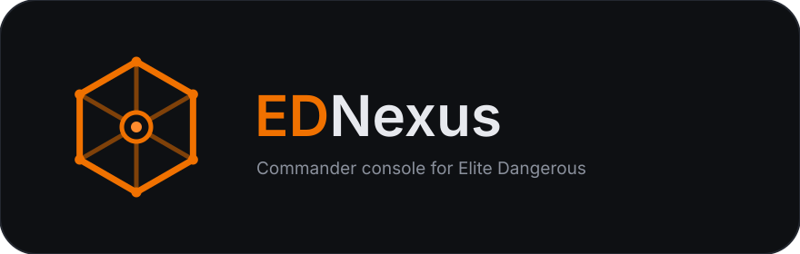

A single, does-it-all commander console for Elite Dangerous — built to replace the sprawl of separate market, route, exobiology, colonisation, and materials tools with one Windows app.
EDNexus works off the game's own data. A watcher tails the journal (Journal.*.log)
and the sidecar status files (Status.json, Cargo.json, Market.json, …),
turns them into a typed event stream, and folds that into a single live commander state that
every feature reads from.
Windows today, with Linux and macOS on the roadmap.
Native-feeling desktop UI across every supported OS.
Clean, testable view models behind the dashboard.
Opt-in, anonymized market, scan, and travel data contributed to the Elite Dangerous Data Network as you play.
Opt-in sync of your commander's identity, credits, ranks, and travel to your own Inara profile.
Installers are self-contained — no separate .NET install needed.
| Platform | How |
|---|---|
| Windows | Run the EDNexus-<version>-setup.exe installer (Inno Setup) |
Linux and macOS are not yet officially supported.
Building from source:
# Live dashboard
dotnet run --project src/EDNexus.App
# Headless: replay the latest journal and print current state
dotnet run --project src/EDNexus.Cli -- --once